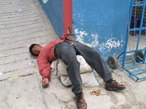

Blogs
Sticks to a Walker - Thanks to a great ministry
A Day of Joy and Poverty
It took us two hours to get to the meeting in the morning. We took a bus, walked 45 minutes up along a mountain ridge and then tromped through a maze of cornfields, farm land and dirt paths. Even though we were 45 minutes late, the women were delighted to see us. No gringos had ever come to visit them in their homes and asked questions about their daily lives. They were all very welcoming and excited to talk with us and have their photos taken. They were also glad to see us because the head of the Chimaltenango office of Friendship Bridge brought the checks for their next 6-month loan. The women were quite happy with this day. The atmosphere was charged with good vibes.
Evangelicals and Catholicism in Guatemala
Patchwork quilt to honor the dead and disappeared of the civil war
The amazing wood carriers of Guatemala
This boy said he had only a 1-hour walk with his load, but we know many carry their loads farther. Some are gathering wood for their own use, but many people are also gathering the wood for sale and carrying it many miles, since it's the only way they have to earn a little cash.
Fancy bike gear: Sandals
By the way, both of us abandoned fancy clipless pedals and shoes some time ago (like in Victoria, British Columbia). For me, it's just that I want only one pair of shoes, and a clip isn't a very friendly thing on your one pair of shoes. For Nancy, it's that she never does get all that confident about the clipped-in thing. Anyway, we're just normal people with normal shoes these days. Or sandals, that is.
A Weekend Ride to Antigua Guatemala
Drunks in the street

One of the more disturbing things about a couple of the places we've been recently is seeing drunks just laying unconscious on the sidewalk, or even sprawling out into the street. There seems to be no custom of getting them off the street, or having the police come and bundle them off to a detox center. They just collapse and sleep it off right there in front of everybody. One place where we used the internet we regularly had to step over a drunk to walk in the front door. Of course this is ugly. We know that this level drunkenness happens everywhere, but it seems like our custom at home is that it's hidden inside somewhere, or if not the police make sure that it's removed quickly from public view. Sometimes it's so extreme here that we wonder whether it's some kind of an art form. Just how drunk can you get before you have to collapse and start drinking? read more here... lee mas aquí... »